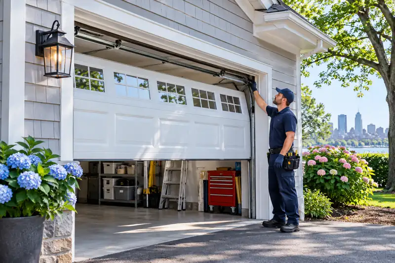

Brand service · Boston, MA
Amarr Garage Door Replacement
This page explains service considerations for Amarr Garage Door Replacement, including symptoms, compatibility checks and repair-versus-replacement questions. Similar products can use different parts or systems, so confirm compatibility with KSE Door Mechanics before scheduling.
Confirm address-level coverage, service scope and appointment availability.

Overview: Amarr Garage Door Replacement
This page explains service considerations for Amarr Garage Door Replacement, including symptoms, compatibility checks and repair-versus-replacement questions. Similar products can use different parts or systems, so confirm compatibility with KSE Door Mechanics before scheduling.
Garage door safety
Springs, cables and bottom brackets may be under extreme tension. Do not loosen, remove or adjust them. Stop operating an unstable or off-track door and keep people clear until it is assessed.
Request professional guidanceAmarr Garage Door Replacement: symptoms and service scope
A typical assessment of amarr garage door replacement may include visual inspection, symptom review, affected-part identification, compatibility checks and a discussion of recommended next steps. Exact scope is confirmed before work begins. Parts or additional repairs are not automatically included.
Compatible Amarr models or families
Compatibility depends on the exact model, serial or part number, system configuration and current parts availability. Share photos of the equipment label and affected component when requesting service.
Model identification: label, age and features
Compatibility depends on the exact model, serial or part number, system configuration and current parts availability. Share photos of the equipment label and affected component when requesting service.
Fault isolation and professional diagnostics
This section discusses fault isolation and professional diagnostics in relation to amarr garage door replacement. Details should be grounded in the actual door, opener, property and service request.
Repair or replacement decision factors
Cost depends on door type and dimensions, the affected component, parts availability, access, condition and additional repairs. Request an itemized estimate after an appropriate assessment; this page does not promise a fixed price.
Parts and compatibility limitations
This section discusses parts and compatibility limitations in relation to amarr garage door replacement. Details should be grounded in the actual door, opener, property and service request.
Testing, safety and handover
A responsible service process includes describing the issue and location, confirming service eligibility, inspecting the system, explaining findings and options, obtaining approval, completing the agreed scope, and checking operation and relevant safety functions.
Amarr Garage Door Replacement FAQs
The questions below cover common planning and safety concerns. Diagnosis, compatibility, quote and scheduling details depend on the actual door and property.
Frequently asked questions
Can KSE Door Mechanics service Amarr products?
Compatibility depends on the exact model, component and condition. Share the model number and photos so the team can confirm whether service is supported.
Are you an authorized dealer or factory service center?
Brand names identify equipment topics and compatibility. Do not assume factory authorization, dealer status or manufacturer affiliation unless explicitly confirmed in writing.
Can older products be repaired?
Parts availability depends on model age, specifications and current supplier availability. A technician can assess whether a compatible repair is practical.
What information should I share?
Provide the brand, model number if available, door dimensions, symptoms, photos and whether the equipment is residential or commercial.
Related service information
Explore related categories and service topics:
Request service
Share the symptoms, service address and equipment details. Current appointment availability is confirmed directly.
Call (833) 877-2561Need garage door help?
Discuss the issue and verify service availability with KSE Door Mechanics.
Call (833) 877-2561